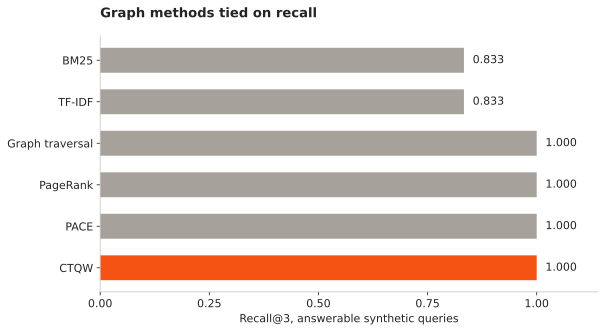
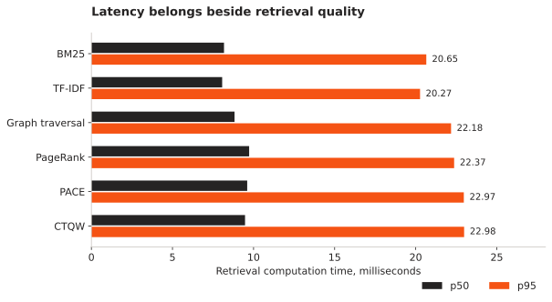

Q-MDM: Quantum-Inspired Multidimensional Dynamic Memory
Q-MDM gives independent agents a shared memory outside any single conversation. I want an agent to recover a decision, inspect its source and continue a task without replaying the whole history.
- Foundation
- Local-first service
- Saved comparison
- 2,592 synthetic trials
- Quantum component
- Classical simulation
Can a small, connected set of sourced memories preserve task continuity better than retrieving isolated passages?
One memory system, several views
This brings the quantum-inspired retrieval work and the cross-agent memory layer into one project. “Multidimensional” means logical views of the same records, such as time, evidence, tasks and agent activity. “Dynamic” means records and relationships can change while earlier versions remain inspectable.
The foundation stores source messages, claims, decisions, procedures and checkpoints. An agent retrieves compact handles, expands exact source versions and records what changed. The default local store is SQLite. REST and a stdio MCP bridge let independent clients use the same service. Consolidated project record .
Keep the exact source message and explicit memory records, with scope, time and revisions.
What retrieval actually does
The lexical baseline combines BM25 and TF-IDF cosine. The strategy named “vector” in the implementation is lexical TF-IDF, not a neural embedding model. Graph retrieval starts at positive lexical anchors and expands a bounded neighbourhood. PACE mixes lexical relevance and personalized PageRank, adds a small intent adjustment and penalizes redundant selections.
The quantum-inspired option simulates a continuous-time walk on the same bounded graph. It evolves complex amplitudes with a matrix exponential and ranks nodes using averaged squared magnitudes. NumPy performs this computation on ordinary hardware.
Q(v) = mean |ψᵥ(t)|², t ∈ {0.5, 1, 2, 3}
There is no quantum processor in this system. The useful comparison is against simpler retrieval on the same candidate graph and context budget.
The saved experiment and what it says
The saved 18 October 2026 experiment contains 2,592 trials across six methods, three synthetic domains, three seeds and three distractor scales. It uses k = 3 and a 3,200-character selection budget. Correct relationships are curated into the fixtures. These are historical results; the current retrieval code has changed since that run.


Read the measurements as a table
| Method | Recall@3 | Precision | Abstention | p50 ms | p95 ms |
|---|---|---|---|---|---|
| bm25 | 0.833 | 0.444 | 0.500 | 8.178 | 20.653 |
| vector | 0.833 | 0.444 | 0.500 | 8.064 | 20.267 |
| beam | 1.000 | 0.500 | 0.500 | 8.827 | 22.180 |
| ppr | 1.000 | 0.500 | 0.500 | 9.727 | 22.369 |
| pace | 1.000 | 0.500 | 0.500 | 9.608 | 22.966 |
| qwam | 1.000 | 0.500 | 0.500 | 9.475 | 22.985 |
The weaker result is abstention: all methods succeed on only half of the missing-fact cases. They can return relevant-looking context even when the requested fact is absent. Retrieval therefore needs an explicit answerability check; related memory is not proof that an answer exists.
What is changing next
| Finding | Next change or experiment |
|---|---|
| Graph methods tie on curated links | Add imperfect links, indirect cues and harder negatives; keep the budget identical across methods. |
| Related context survives missing-fact queries | Evaluate answerability and evidence sufficiency separately from recall. |
| A source can change after an earlier decision | Keep temporal scope and exact revisions consistent in prepared context. |
| MCP access does not force memory use | Test supported pre-prompt adapters; separate automatic retrieval from tools a model may choose to call. |
Desktop packaging, browser context insertion, automated extraction and learned memory policies are separate work items. Some local preparation and hook code is being developed; it has not established a universally integrated consumer product. The benchmark does not measure downstream answer accuracy, token savings or a quantum speedup.
References and project records
- Q-MDM implementation
Memory service, retrieval strategies and integration code.
- Complete project record
Architecture, formulas, history and documented limitations.
- Saved benchmark report
Raw trials and aggregates behind the figures. Local aggregate and runtime hashes .
- LongMemEval
Reference for updates, temporal reasoning and abstention. Its benchmark suite has not been run here.
- MemGPT
Reference for explicit memory tiers and context management.
- From RAG to Memory / HippoRAG 2
Reference for associative graph retrieval. Q-MDM is not a reproduction of this system.